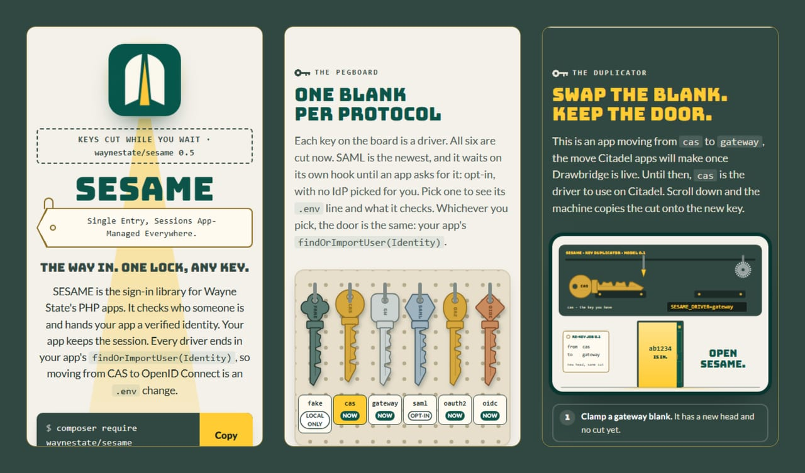

Drivers#
The drivers SESAME can build, their status, and the exact values each one ships with. Pick a driver with Which driver for my app?, then read the matching guide for setup.
Status#
| Driver | Status |
|---|---|
fake |
Now. Local development and tests only. Refuses to boot in production. |
cas |
Now. CAS 2.0 against Academica by default. |
gateway |
Now. The recommended driver for apps on Citadel: a signed JWT assertion from the auth gateway (on Citadel, that is auth.apps.wayne.edu, the first planned one), never a bare header. No Entra registration per app: Drawbridge holds it once. |
saml |
Later. Direct SP. |
oauth2 |
Now. A JWT bearer token verified against the issuer's key set (JWKS), RS256 only. Microsoft Entra ID first. APIs only. |
oidc |
Now. Browser sign-in with OpenID Connect (code flow with PKCE), Microsoft Entra ID first. Needs its own Entra registration per app; for apps off Citadel and APIs. Needs league/oauth2-client. |
The factory#
DriverFactory::make() builds the driver named by the driver config value. Anything else throws InvalidConfig with Unknown driver "<name>".
public static function make(
Config $config,
?ClientInterface $http = null,
?RequestFactoryInterface $requests = null,
?ClockInterface $clock = null,
?ReplayGuard $replayGuard = null,
?CacheInterface $jwksCache = null,
?SessionPort $session = null,
): Driver
| Argument | Driven by | What it does |
|---|---|---|
$http (PSR-18 client) |
cas, oauth2, oidc |
Talks to the identity provider over HTTP. The factory cannot build an HTTP client itself, so the app passes one. |
$requests (PSR-17 request factory) |
cas, oauth2, oidc |
Builds the HTTP requests the drivers send. |
$clock (PSR-20 clock) |
cas, gateway, oauth2 |
Supplies the sign-in time. Without one, those drivers use the system clock. |
$replayGuard (a ReplayGuard, for example a Psr16ReplayGuard over a PSR-16 cache) |
gateway |
Remembers used assertion jti values so a captured assertion cannot be replayed. Fifth argument. |
$jwksCache (PSR-16 cache) |
oauth2, oidc |
Holds the fetched key set. Sixth argument. Required for oauth2; optional for oidc, which keeps the discovery document and the key set in process memory without one. |
$session (the app's SessionPort) |
oidc |
Holds the driver's state, nonce and PKCE verifier, bound to the browser. Seventh argument. |
When a required argument or config value is missing, the factory throws InvalidConfig:
| Missing | Message |
|---|---|
PSR-18 client for cas |
The cas driver needs a PSR-18 client. Pass $http to DriverFactory::make(). |
| PSR-17 request factory | The cas, oauth2 and oidc drivers need a PSR-17 request factory. Pass $requests to DriverFactory::make(). |
PSR-18 client for oauth2 |
The oauth2 driver needs a PSR-18 client to fetch the issuer's key set. Pass $http to DriverFactory::make(). |
PSR-16 cache for oauth2 |
The oauth2 driver needs a PSR-16 cache to hold the fetched key set. Pass $jwksCache to DriverFactory::make(). |
oidc config block |
The oidc driver needs the "oidc" config block. |
PSR-18 client for oidc |
The oidc driver needs a PSR-18 client for discovery, the key set and the token request. Pass $http to DriverFactory::make(). |
App session for oidc |
The oidc driver needs the app session to bind each sign-in to the browser. Pass $session to DriverFactory::make(). |
Non-empty gateway.public_key, gateway.issuer or gateway.audience (and oauth2.issuer, oauth2.jwks_url, oauth2.audience) |
The config key "%s" must be a non-empty string. |
| Unknown driver | Unknown driver "%s". |
fake#
A driver for local development and tests only. It returns the identity it was built with, every time. It refuses to construct outside the allowed development environments: it throws, it never silently falls back. The check is an allowlist, so an environment that is not explicitly a development one (production, staging, or anything unknown) can never boot the fake driver.
| Value | Exact |
|---|---|
| Name | fake |
| Allowed environments | local, development, dev, testing, test (an allowlist, matched after lowercasing and trimming) |
| Identity | The username and attributes it was built with, every time |
| Outside the allowlist | Throws FakeDriverInProduction with The fake driver only runs in local, development and testing environments. |
logoutUrl(), serviceUrl() |
null |
The factory builds it from the fakeUsername and fakeAttributes config properties, with the username defaulting to the empty string.
cas#
CAS 2.0 against Academica by default.
- The service URL is the configured value only. This driver never reads
Host,X-Forwarded-Proto,X-Forwarded-Hostor any other request header to build it, which removes the wayne-cas proto trust and the phpCASX-Forwarded-Portbreak in one rule. - The default protocol is 2.0 because Academica is believed to redirect cookieless
/p3/serviceValidatecalls to the login page. Set the protocol to 3.0 (cas.protocol) when a CAS server does release attributes on/p3/serviceValidate. - Ticket replay: the CAS server refuses a reused ticket with
INVALID_TICKET. SESAME relies on that and surfaces it asAuthenticationFailed. - The sign-in time comes from the CAS
authenticationDateattribute when the server sends one; otherwise it is the driver's clock. Time is read through a PSR-20 clock, so the future-date guard is testable. - CAS carries no MFA signal of its own, so by default the identity carries no MFA facts and the MFA check fails closed. With
assume_mfaon, the driver trusts the CAS server's owner's word that a successful validation means MFA happened for the user's current SSO session: the identity'samrthen includesmfa, and its MFA time (authTime) is theauthenticationDatewhen the server sent one. The driver never invents anauthTime: with noauthenticationDate, the MFA time stays unset and the MFA check answersNO_AUTH_TIME.
| Value | Exact |
|---|---|
| Protocol | 2.0 by default; only 2.0 or 3.0 are accepted |
cas.base_url, cas.service_url |
Must be absolute https:// URLs |
| Ticket | An ST- service ticket, at most 256 characters (^ST-[A-Za-z0-9._\-]{1,253}$) |
| Validation path | /serviceValidate for 2.0, /p3/serviceValidate for 3.0 |
| Login query | service= always; renew=true when renew is on |
| Logout URL | /logout?service=<return>&url=<return> (Academica reads url=; service= is the CAS-standard parameter name) |
The exact error messages:
| Condition | Message |
|---|---|
| Bad protocol | The config key "cas.protocol" must be "3.0" or "2.0", got "%s". |
| Bad URL | The config key "%s" must be an absolute https:// URL, got "%s". |
| Bad ticket | The ticket in the request is not a valid CAS ticket. |
gateway#
Signed JWT assertions from the Drawbridge gateway. "Open Sesame", but only the real magic word gets the door.
- The driver reads one configured header that holds a signed JWT, verifies its signature against the gateway's public key, and checks the issuer, audience and time claims.
- It never reads a plain identity header (
Remote-User,X-Remote-User, or any spelling of them), because a plain header can come from anywhere on the shared network. - The request must also come from a trusted proxy: the direct peer (
REMOTE_ADDR) must match one of the configured CIDR ranges. A valid assertion from an untrusted peer is still rejected. - The algorithm is pinned from config, so a token that claims a different algorithm (or
none) is refused before its signature is even looked at. - Every assertion is single-use. The gateway signs a fresh assertion for every request, so a captured one is only dangerous if it can be sent twice: the driver requires a
jticlaim, refuses assertions that live longer than the configured maximum, and hands thejtito aReplayGuard, which remembers it for the assertion's lifetime. A second use of the samejtiis a replay and is refused. - A token without an issue time or an expiry is not a usable assertion, and a token without a subject has no one to sign in. The subject becomes the username.
| Value | Exact |
|---|---|
| Assertion header | X-Sesame-Assertion by default (the factory's default when the config names none) |
| Max assertion lifetime | 300 seconds (the constructor default for maxLifetimeSeconds) |
| Replay guard | Required unless gateway.allow_without_replay_guard is on (local development only) |
| Required claims | A subject, an issue time and an expiry, plus the jti for the replay guard |
| Public keys | gateway.public_keys as a map of kid to key, or a single gateway.public_key |
The exact error messages:
| Condition | Message |
|---|---|
| No replay guard | The gateway driver needs a ReplayGuard so a captured assertion cannot be replayed. Pass one to the driver (or to DriverFactory::make()), or set gateway.allow_without_replay_guard to true for local development only. |
| Empty key map | The config key "gateway.public_keys" must be a non-empty map of kid to key. |
oauth2#
JWT bearer tokens from an identity provider. "Open Sesame", where the magic word is a token only the issuer can sign.
- The driver reads the
Authorizationheader (a Bearer token, per RFC 6750), verifies its RS256 signature against a key from the issuer's JWKS, and checks the issuer, audience, time, scope and role claims. - It accepts only RS256:
noneand HMAC algorithms are refused before their signatures are even looked at, because an HMAC token signed with the public key is a classic forgery. - Microsoft Entra ID is the first planned issuer: point
issuer,jwks_urlandaudienceat the tenant's v2.0 endpoints and the app's client id, and the driver signs the user in from the access token. Any other RS256 issuer works with the same settings. - The username comes from one configurable claim:
preferred_usernameby default, oraccessid(the UPN's mail prefix) when the app wants that. - There is no redirect step and no logout on the provider side: the token arrives with the request, and signing out is the app's own session being dropped.
| Value | Exact |
|---|---|
| Token | A Bearer token in the Authorization header (RFC 6750) |
| Algorithm | RS256 only; none and HMAC are refused |
| Identity claim | preferred_username by default, or accessid |
| Key set | Fetched from jwks_url over HTTP and kept in the PSR-16 cache |
| Unknown key | AuthenticationFailed with No published signing key matches the access token (oauth2.unknown_key). |
oidc#
Browser sign-in with OpenID Connect, Microsoft Entra ID first. "Open Sesame" said to the right door, then checked at the counter. The driver runs the authorization code flow with PKCE (S256):
- A request without a code is the start. The driver makes a fresh
stateandnonce, hasleague/oauth2-clientbuild the authorization URL and the PKCE verifier, keeps all three in the app's session (bound to this browser, single use, expiring), and answers with aRedirectto the identity provider. - A request with a code (or an error) is the callback. The pending sign-in for its
stateis taken out of the session first, so a replayed callback finds nothing.league/oauth2-clientexchanges the code with the PKCE verifier and the client secret, and SESAME's own validator (the samefirebase/php-jwtandJwksProviderthe oauth2 driver uses) checks the ID token: signature on an RSA allowlist,iss,aud,azp,exp,nbf,iatand the nonce.
- The endpoints come from the issuer's discovery document, kept in a PSR-16 cache, unless config names them.
- No
promptand nomax_ageare sent by default, so an existing Entra session signs the user in without a click. - A start request with
step_up=1adds the app's configured step-up parameters (prompt=loginby default, and optionallymax_age,acr_valuesandclaims), and its callback then requires a freshauth_time. - The username comes from one configurable claim (
accessidby default). Falling back to the part ofpreferred_usernamebefore the@is an opt-in (oidc.username_fallback), because users can changepreferred_username. iss,sub,tidandoidare passed to the resolver, so apps can key accounts on issuer plussub, or tenant plusoid. The roles claim (wsu_rolesby default) becomes therolesattribute, the claims the app lists inoidc.claims(wsu_rolesandaccessidby default) are passed through under their own names, andauth_timeandamrbecome the identity's MFA facts with the same rules as the cas driver'sauthenticationDate: the driver never invents a sign-in time.- The access token and the ID token are never stored: the identity is all the session keeps.
- The driver needs
league/oauth2-client, which SESAME suggests but does not require. - The token request goes through Guzzle (via
league/oauth2-client). When the app's PSR-18 client is Guzzle, it is reused for that too, with redirects turned off on each token request; otherwise a Guzzle client is built that does not follow redirects and gives up after ten seconds. Discovery and the key set go through the PSR-18 client.
saml#
Later. Direct SP.
What every driver returns#
Every driver exposes the same four methods: name(), login(), logoutUrl() and serviceUrl(). login() answers with a Redirect to the identity provider, or with an Authenticated step carrying an Identity (the username, the attributes, the driver name and the sign-in time). The fake driver's logoutUrl() and serviceUrl() return null; the cas driver's return the configured logout URL and service URL.
Walk around the shop#
The front page's counter, pegboard and duplicator.
